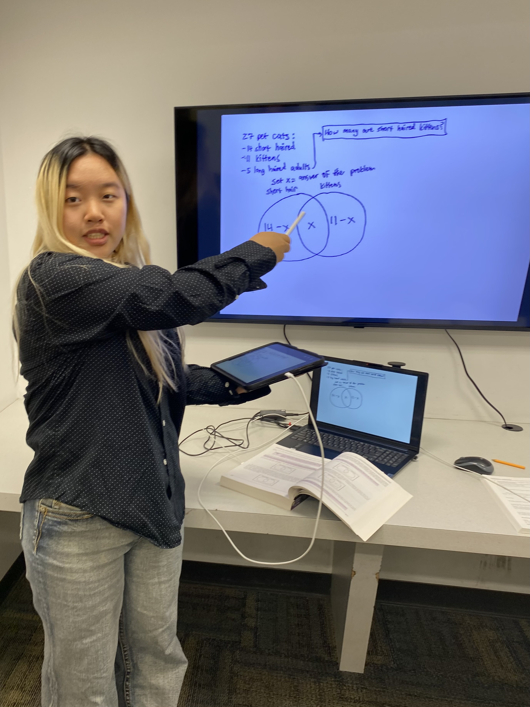

A Nevada nonprofit corporation
Empowering Northern Nevada's youth through joyful mathematics
Less than 1 in 5 Nevada high schoolers are proficient in math. That’s why we’re starting early. We believe all students—no matter their background—deserve access to engaging, challenging math experiences that lay the foundation for future success.
Founded by Madison Tran, the Math Circle of Nevada is one of the first free math enrichment programs for elementary and middle schoolers in Northern Nevada. Inspired by elite programs such as the UCLA Math Circle, which Madison had been a part of in elementary and middle school, we bring these experiences to our local community—for free.
Our sessions blend fun, collaborative problem-solving with real-world applications, helping students build confidence, creativity, and a genuine love for math.
We are officially recognized as a Satellite Math Circle of the Olga Radko Endowed Math Circle (ORMC) at the University of California, Los Angeles. For details on the qualifications required for this designation, please visit: www.circles.math.ucla.edu/circles.
We offer two levels of engaging, rigorous math classes designed for students in grades 3–8. Each class is inquiry-based, discussion-driven, and encourages students to think deeply and creatively.
Ideal for: Students who are curious, love puzzles, and want to build a strong foundation in mathematical thinking.
Focus Areas:
Sample Topics: How to count cleverly, math in art, drawing conclusions from patterns, and how ancient mathematicians thought about numbers.
Ideal for: Middle school students who enjoy challenging math problems and want to explore topics beyond the classroom.
Focus Areas:
Sample Topics: The Infinite Hotel Paradox. Graph theory—can you plan a party without drama? Can you break a chocolate bar using math? What does it mean for something to be impossible to solve?
Your support means the world to us. Click the button below to visit our GoFundMe page and learn more about how you can help.
Donate Now